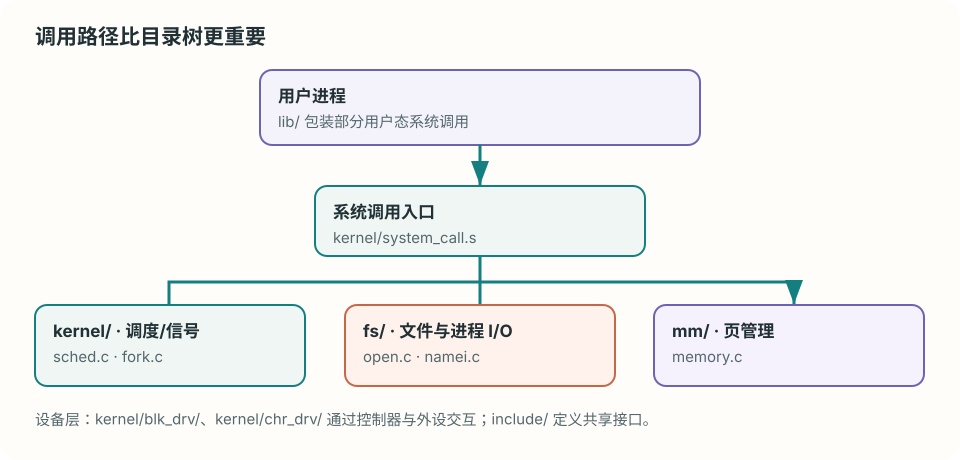

把 Linux 0.11 读成一张调用地图
不是记忆目录数目，而是理解用户调用、调度、内存、文件系统与设备之间的依赖边。
源码组织 · 调用路径目录是分类，不是执行顺序
打开源码仓库时，你可能会先看到 boot/、kernel/、fs/、mm/。但机器运行时不会“先执行 kernel/ 文件夹”。目录树只能告诉我们代码被放在哪里，不能说明谁在什么时候调用谁。
更可靠的方法是从具体事件出发。例如，一个用户进程调用 read()，内核会经过系统调用入口和文件描述符路径，最终可能到达缓存、块设备请求队列与驱动；但不同文件描述符（普通文件、管道、TTY）走的路径不同。不存在一个适用于所有 read() 的单箭头答案。

源码目录逐个定位
| 目录 | 职责 | 从哪里下手 |
|---|---|---|
boot/ | 16 位启动、模式切换、32 位入口 | bootsect.s、setup.s、head.s |
init/ | 初始化与最初进程 | main.c |
kernel/ | 调度、系统调用、信号、设备驱动子目录 | sched.c、system_call.s |
mm/ | 物理页分配与页表操作 | memory.c |
fs/ | 文件描述符、inode、MINIX 文件系统路径 | open.c、namei.c |
include/ | 内核和系统接口声明 | linux/sched.h |
lib/ | 辅助函数、系统调用包装 | open.c、string.c |
tools/ | 构建 Image 的工具 | build.c |
用一条系统调用理解分层
read() 的用户态包装进入内核后，kernel/system_call.s 负责系统调用分派，具体实现位于系统调用表对应的函数中。描述符参数随后让 fs/ 的代码确定目标是普通文件、管道还是字符设备。实际接触驱动的路径取决于文件类型和缓存状态。
# 在解压后的 Linux 0.11 源码根目录执行
grep -n 'system_call:' kernel/system_call.s
grep -n 'sys_read' fs/read_write.c
grep -n 'sys_call_table' include/linux/sys.h
grep -n 'll_rw_block' fs/buffer.c kernel/blk_drv/ll_rw_blk.c这是一条检索路线，而不是承诺这些函数必然组成某次 I/O 的唯一调用栈。对于 read()，真正的实验应跟踪不同文件类型，观察分支在哪里分流。更深的完整路径将在后续系统调用、文件系统和驱动章节逐一展开。
构建产物不能套用现代术语
原始 Makefile 的核心目标是 Image。它先把 boot/bootsect、boot/setup 和 tools/system 制备出来，再让 tools/build 拼接成可启动镜像。tools/system 是链接产物，但不能把它径直说成现代内核构建流程的 vmlinux。
all: Image
Image: boot/bootsect boot/setup tools/system tools/build
tools/build boot/bootsect boot/setup tools/system $(ROOT_DEV) > Image另外，0.11 原始 Makefile 中的 as86、ld86、历史 gcc/gas 和链接选项，不能假定与现代发行版工具链兼容。对构建链路的理解和今天重新编译成功是两种独立验收目标。
阅读源码时建立四列表
不要只做函数摘要。建议给每条链记录四件事：入口状态、关键变换、输出状态、直接证据。以 bootsect.s 为例：
| 入口 | 操作 | 下一状态 | 证据 |
|---|---|---|---|
| BIOS 装载 0x7C00 | 复制 256 个字到 0x90000 | 代码在新地址继续执行 | rep movw 和远跳转 |
| 位于 0x90000 | 读取 4 个 setup 扇区 | setup 在 0x90200 | SETUPLEN、INT 0x13 |
| setup 已就绪 | 读入 system 到 0x10000 | 跳到 setup | read_it、jmpi |
为什么“宏内核 vs 微内核”不能只靠代码放在一个仓库来判断？（展开核对）
区分关键是系统服务的运行地址空间、权限边界、通信方式与调用开销，而不是目录数量。Linux 0.11 的多个子系统在同一内核地址空间紧密协作，这是宏内核设计的典型特征。
版本证据与下一步
- Makefile：构建依赖和
Image的组装。 - kernel/system_call.s：系统调用分派的汇编入口。
- fs/read_write.c：文件读写系统调用处理。
- boot/bootsect.s：可以核对“入口—变换—输出”的完整示例。
完成本章后，应该能说清“目录图”和“执行图”有什么差别。接着在第 3 章准备一个可验证的源码实验环境。